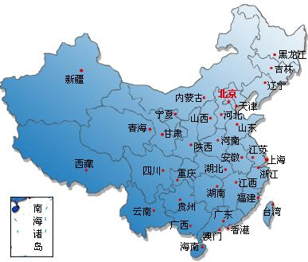

古老的中国
中华人民共和国，简称中国，位于亚洲大陆东部，太平洋西岸。
陆地面积约960万平方公里，在亚洲，是面积最大的国家，在世界上，是仅次于俄罗斯和加拿大的第三大国家

北京
北京市简称京，是中华人民共和国的首都、直辖市之一、全国政治、文化和国际交流中心。北京位于华北平原北端，东南与北方经济中心天津相连，其余为河北省所环绕。其常住人口接近2000万，居中国第二。北京有着3000余年的建城史和850余年的建都史，是“中国四大古都”之一，其最早见于文献的名称叫做“蓟”。北京荟萃了自元明清以来的中华文化，拥有众多名胜古迹和人文景观，是全球拥有世界文化遗产最多的城市。今天的北京拥有41家世界500强企业总部，位居全球第二。
上海
上海，中国大陆第一大城市，四个中央直辖市之一，是中国大陆的经济、金融、贸易和航运中心。上海创造和打破了中国世界纪录协会多项世界之最、中国之最。上海位于我国大陆海岸线中部的长江口，拥有中国最大的外贸港口、最大的工业基地。有超过2000万人居住和生活在上海地区，其中大部分属汉族江浙民系，通行吴语上海话。上海又是一座新兴的旅游目的地，具有深厚的近代城市文化底蕴和众多的历史古迹。如今上海已经发展成为一个闪耀全球的国际化大都市，并致力于在2020年建设成为国际金融中心和航运中心。上海是2010年世界博览会举办城市。
我的家乡--长春
长春，吉林省省会，全省政治、经济、文化和交通中心，中国最大的汽车工业城市，有“东方底特律”之称。中国建成区面积和建成区人口第九大城市。中国特大城市之一。